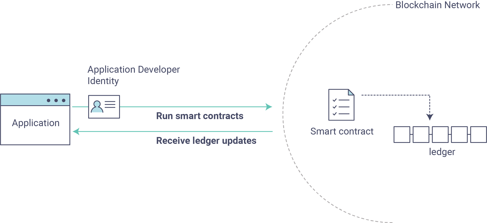

hyperledger-fabricdocs
Note
If you’re not yet familiar with the fundamental architecture of a Fabric network, you may want to visit the Key Concepts section prior to continuing.
It is also worth noting that this tutorial serves as an introduction to Fabric applications and uses simple smart contracts and applications. For a more in-depth look at Fabric applications and smart contracts, check out our Developing Applications section or the Commercial paper tutorial.
This tutorial provides an introduction to how Fabric applications interact with deployed blockchain networks. The tutorial uses sample programs built using the Fabric SDKs – described in detail in the Application topic – to invoke a smart contract which queries and updates the ledger with the smart contract API – described in detail in Smart Contract Processing. We will also use our sample programs and a deployed Certificate Authority to generate the X.509 certificates that an application needs to interact with a permissioned blockchain.
About Asset Transfer
This Asset Transfer (basic) sample demonstrates how to initialize a ledger with assets, query those assets, create a new asset, query a single asset based on an asset ID, update an existing asset, and transfer an asset to a new owner. It involves the following two components:
1. Sample application: which makes calls to the blockchain network, invoking transactions implemented in the chaincode (smart contract). The application is located in the following fabric-samples directory: asset-transfer-basic/application-javascript 2. Smart contract itself, implementing the transactions that involve interactions with the ledger. The smart contract (chaincode) is located in the following fabric-samples directory: asset-transfer-basic/chaincode-(javascript, java, go, typescript)
1. Sample application: which makes calls to the blockchain network, invoking transactions implemented in the chaincode (smart contract). The application is located in the following fabric-samples directory:
fabric-samples
asset-transfer-basic/application-javascript
2. Smart contract itself, implementing the transactions that involve interactions with the ledger. The smart contract (chaincode) is located in the following fabric-samples directory:
asset-transfer-basic/chaincode-(javascript, java, go, typescript)
Please note that for the purposes of this tutorial, the terms chaincode and smart contract are used interchangeably. For this example, we will be using the javascript chaincode.
We’ll go through three principle steps:
1. Setting up a development environment. Our application needs a network to interact with, so we’ll deploy a basic network for our smart contracts and application.  2. Explore a sample smart contract. We’ll inspect the sample assetTransfer (javascript) smart contract to learn about the transactions within it, and how they are used by an application to query and update the ledger. 3. Interact with the smart contract with a sample application. Our application will use the assetTransfer smart contract to create, query, and update assets on the ledger. We’ll get into the code of the app and the transactions they create, including initializing the ledger with assets, querying an asset, querying a range of assets, creating a new asset, and transferring an asset to a new owner.
1. Setting up a development environment. Our application needs a network to interact with, so we’ll deploy a basic network for our smart contracts and application.
2. Explore a sample smart contract. We’ll inspect the sample assetTransfer (javascript) smart contract to learn about the transactions within it, and how they are used by an application to query and update the ledger.
3. Interact with the smart contract with a sample application. Our application will use the assetTransfer smart contract to create, query, and update assets on the ledger. We’ll get into the code of the app and the transactions they create, including initializing the ledger with assets, querying an asset, querying a range of assets, creating a new asset, and transferring an asset to a new owner.
After completing this tutorial you should have a basic understanding of how Fabric applications and smart contracts work together to manage data on the distributed ledger of a blockchain network.
In addition to the standard Prerequisites for Fabric, this tutorial leverages the Hyperledger Fabric SDK for Node.js. See the Node.js SDK README for a up to date list of prerequisites.
If you are using macOS, complete the following steps:
Install Homebrew.
Check the Node SDK prerequisites to find out what level of Node to install.
Run brew install node to download the latest version of node or choose a specific version, for example: brew install node@10 according to what is supported in the prerequisites.
brew install node
brew install node@10
Run npm install.
npm install
If you are on Windows, you can install the windows-build-tools with npm which installs all required compilers and tooling by running the following command:
npm install --global windows-build-tools
If you are on Linux, you need to install Python v2.7, make, and a C/C++ compiler toolchain such as GCC. You can run the following command to install the other tools:
sudo apt install build-essential
If you’ve already run through Using the Fabric test network tutorial and have a network up and running, this tutorial will bring down your running network before bringing up a new one.
This tutorial demonstrates the JavaScript versions of the Asset Transfer smart contract and application, but the fabric-samples repository also contains Go, Java and TypeScript versions of this sample smart contract. To try the Go, Java or TypeScript versions, change the javascript argument for ./network.sh deployCC -ccl javascript below to either go, java or typescript and follow the instructions written to the terminal. You may use any chaincode language sample with the javascript application sample (e.g javascript application calling go chaincode functions or javascript application calling typescript chaincode functions, etc.)
javascript
./network.sh deployCC -ccl javascript
go
java
typescript
Navigate to the test-network subdirectory within your local clone of the fabric-samples repository.
test-network
cd fabric-samples/test-network
If you already have a test network running, bring it down to ensure the environment is clean.
./network.sh down
Launch the Fabric test network using the network.sh shell script.
network.sh
./network.sh up createChannel -c mychannel -ca
This command will deploy the Fabric test network with two peers, an ordering service, and three certificate authorities (Orderer, Org1, Org2). Instead of using the cryptogen tool, we bring up the test network using Certificate Authorities, hence the -ca flag. Additionally, the org admin user registration is bootstrapped when the Certificate Authority is started. In a later step, we will show how the sample application completes the admin enrollment.
-ca
Next, let’s deploy the chaincode by calling the ./network.sh script with the chaincode name and language options.
./network.sh
./network.sh deployCC -ccn basic -ccp ../asset-transfer-basic/chaincode-javascript/ -ccl javascript
Behind the scenes, this script uses the chaincode lifecycle to package, install, query installed chaincode, approve chaincode for both Org1 and Org2, and finally commit the chaincode.
If the chaincode is successfully deployed, the end of the output in your terminal should look similar to below:
Committed chaincode definition for chaincode 'basic' on channel 'mychannel': Version: 1.0, Sequence: 1, Endorsement Plugin: escc, Validation Plugin: vscc, Approvals: [Org1MSP: true, Org2MSP: true] ===================== Query chaincode definition successful on peer0.org2 on channel 'mychannel' ===================== ===================== Chaincode initialization is not required =====================
Next, let’s prepare the sample Asset Transfer Javascript application that will be used to interact with the deployed chaincode.
JavaScript application
Note that the sample application is also available in Go and Java at the links below:
Go application
Java application
Open a new terminal, and navigate to the application-javascript folder.
application-javascript
cd asset-transfer-basic/application-javascript
This directory contains sample programs that were developed using the Fabric SDK for Node.js. Run the following command to install the application dependencies. It may take up to a minute to complete:
This process is installing the key application dependencies defined in the application’s package.json. The most important of which is the fabric-network Node.js module; it enables an application to use identities, wallets, and gateways to connect to channels, submit transactions, and wait for notifications. This tutorial also uses the fabric-ca-client module to enroll users with their respective certificate authorities, generating a valid identity which is then used by the fabric-network module to interact with the blockchain network.
package.json
fabric-network
fabric-ca-client
Once npm install completes, everything is in place to run the application. Let’s take a look at the sample JavaScript application files we will be using in this tutorial. Run the following command to list the files in this directory:
ls
You should see the following:
app.js node_modules package.json package-lock.json
The first part of the following section involves communication with the Certificate Authority. You may find it useful to stream the CA logs when running the upcoming programs by opening a new terminal shell and running docker logs -f ca_org1.
docker logs -f ca_org1
When we started the Fabric test network back in the first step, an admin user — literally called admin — was created as the registrar for the Certificate Authority (CA). Our first step is to generate the private key, public key, and X.509 certificate for admin by having the application call the enrollAdmin . This process uses a Certificate Signing Request (CSR) — the private and public key are first generated locally and the public key is then sent to the CA which returns an encoded certificate for use by the application. These credentials are then stored in the wallet, allowing us to act as an administrator for the CA.
admin
enrollAdmin
Let’s run the application and then step through each of the interactions with the smart contract functions. From the asset-transfer-basic/application-javascript directory, run the following command:
node app.js
It is important to note that enrolling the admin and registering the app user are interactions that take place between the application and the Certificate Authority, not between the application and the chaincode. If you examine the chaincode in asset-transfer-basic/chaincode-javascript/lib you will find that the chaincode does not contain any functionality that supports enrolling the admin or registering the user.
asset-transfer-basic/chaincode-javascript/lib
In the sample application code below, you will see that after getting reference to the common connection profile path, making sure the connection profile exists, and specifying where to create the wallet, enrollAdmin() is executed and the admin credentials are generated from the Certificate Authority.
enrollAdmin()
async function main() { try { // build an in memory object with the network configuration (also known as a connection profile) const ccp = buildCCP(); // build an instance of the fabric ca services client based on // the information in the network configuration const caClient = buildCAClient(FabricCAServices, ccp); // setup the wallet to hold the credentials of the application user const wallet = await buildWallet(Wallets, walletPath); // in a real application this would be done on an administrative flow, and only once await enrollAdmin(caClient, wallet);
This command stores the CA administrator’s credentials in the wallet directory. You can find administrator’s certificate and private key in the wallet/admin.id file.
wallet
wallet/admin.id
If you decide to start over by taking down the network and bringing it back up again, you will have to delete the wallet folder and its identities prior to re-running the javascript application or you will get an error. This happens because the Certificate Authority and its database are taken down when the test-network is taken down but the original wallet still remains in the application-javascript directory so it must be deleted. When you re-run the sample javascript application, a new wallet and credentials will be generated.
If you scroll back up to the beginning of the output in your terminal, it should be similar to below:
Wallet path: /Users/<your_username>/fabric-samples/asset-transfer-basic/application-javascript/wallet Successfully enrolled admin user and imported it into the wallet
Because the admin registration step is bootstrapped when the Certificate Authority is started, we only need to enroll the admin.
Since the Fabric CA interactions are common across the samples, enrollAdmin() and the other CA related functions are included in the fabric-samples/test-application/javascript/CAUtil.js common utility.
fabric-samples/test-application/javascript/CAUtil.js
As for the app user, we need the application to register and enroll the user in the next step.
Now that we have the administrator’s credentials in a wallet, the application uses the admin user to register and enroll an app user which will be used to interact with the blockchain network. The section of the application code is shown below.
// in a real application this would be done only when a new user was required to be added // and would be part of an administrative flow await registerUser(caClient, wallet, userId, 'org1.department1');
Similar to the admin enrollment, this function uses a CSR to register and enroll appUser and store its credentials alongside those of admin in the wallet. We now have identities for two separate users — admin and appUser — that can be used by our application.
appUser
Scrolling further down in your terminal output, you should see confirmation of the app user registration similar to this:
Successfully registered and enrolled user appUser and imported it into the wallet
In the prior steps, the application generated the admin and app user credentials and placed them in the wallet. If the credentials exist and have the correct permissions attributes associated with them, the sample application user will be able to call chaincode functions after getting reference to the channel name and contract name.
Our connection configuration specifies only the peer from your own Org. We tell node client sdk to use the service discovery (running on the peer), which fetches other peers that are currently online, metadata like relevant endorsement policies and any static information it would have otherwise needed to communicate with the rest of the nodes. The asLocalhost set to true tells it to connect as localhost, since our client is running on same network as the other fabric nodes. In deployments where you are not running the client on the same network as the other fabric nodes, the asLocalhost option would be set to false.
asLocalhost
true
false
You will notice that in the following lines of application code, the application is getting reference to the Contract using the contract name and channel name via Gateway:
// Create a new gateway instance for interacting with the fabric network. // In a real application this would be done as the backend server session is setup for // a user that has been verified. const gateway = new Gateway(); try { // setup the gateway instance // The user will now be able to create connections to the fabric network and be able to // submit transactions and query. All transactions submitted by this gateway will be // signed by this user using the credentials stored in the wallet. await gateway.connect(ccp, { wallet, identity: userId, discovery: {enabled: true, asLocalhost: true} // using asLocalhost as this gateway is using a fabric network deployed locally }); // Build a network instance based on the channel where the smart contract is deployed const network = await gateway.getNetwork(channelName); // Get the contract from the network. const contract = network.getContract(chaincodeName);
When a chaincode package includes multiple smart contracts, on the getContract() API you can specify both the name of the chaincode package and a specific smart contract to target. For example:
const contract = await network.getContract('chaincodeName', 'smartContractName');
Now that we are at the point where we are actually having the sample application submit transactions, let’s go through them in sequence. The application code snippets and invoked chaincode snippets are provided for each called function, as well as the terminal output.
The submitTransaction() function is used to invoke the chaincode InitLedger function to populate the ledger with some sample data. Under the covers, the submitTransaction() function will use service discovery to find a set of required endorsing peers for the chaincode, invoke the chaincode on the required number of peers, gather the chaincode endorsed results from those peers, and finally submit the transaction to the ordering service.
InitLedger
Sample application 'InitLedger' call
'InitLedger'
// Initialize a set of asset data on the channel using the chaincode 'InitLedger' function. // This type of transaction would only be run once by an application the first time it was started after it // deployed the first time. Any updates to the chaincode deployed later would likely not need to run // an "init" type function. console.log('\n--> Submit Transaction: InitLedger, function creates the initial set of assets on the ledger'); await contract.submitTransaction('InitLedger'); console.log('*** Result: committed');
Chaincode 'InitLedger' function
async InitLedger(ctx) { const assets = [ { ID: 'asset1', Color: 'blue', Size: 5, Owner: 'Tomoko', AppraisedValue: 300, }, { ID: 'asset2', Color: 'red', Size: 5, Owner: 'Brad', AppraisedValue: 400, }, { ID: 'asset3', Color: 'green', Size: 10, Owner: 'Jin Soo', AppraisedValue: 500, }, { ID: 'asset4', Color: 'yellow', Size: 10, Owner: 'Max', AppraisedValue: 600, }, { ID: 'asset5', Color: 'black', Size: 15, Owner: 'Adriana', AppraisedValue: 700, }, { ID: 'asset6', Color: 'white', Size: 15, Owner: 'Michel', AppraisedValue: 800, }, ]; for (const asset of assets) { asset.docType = 'asset'; await ctx.stub.putState(asset.ID, Buffer.from(JSON.stringify(asset))); console.info(`Asset ${asset.ID} initialized`); } }
The terminal output entry should look similar to below:
Submit Transaction: InitLedger, function creates the initial set of assets on the ledger
First, a word about querying the ledger.
Each peer in a blockchain network hosts a copy of the ledger. An application program can view the most recent data from the ledger using read-only invocations of a smart contract running on your peers called a query.
Here is a simplified representation of how a query works:
The most common queries involve the current values of data in the ledger – its world state. The world state is represented as a set of key-value pairs, and applications can query data for a single key or multiple keys. Moreover, you can use complex queries to read the data on the ledger when you use CouchDB as your state database and model your data in JSON. This can be very helpful when looking for all assets that match certain keywords with particular values; all assets with a particular owner, for example.
Below, the sample application is just getting all the assets that we populated in the prior step when we initialized the ledger with data. The evaluateTransaction() function is used when you’d like to query a single peer, without submitting a transaction to the ordering service.
Sample application 'GetAllAssets' call
'GetAllAssets'
// Let's try a query type operation (function). // This will be sent to just one peer and the results will be shown. console.log('\n--> Evaluate Transaction: GetAllAssets, function returns all the current assets on the ledger'); let result = await contract.evaluateTransaction('GetAllAssets'); console.log(`*** Result: ${prettyJSONString(result.toString())}`);
Chaincode 'GetAllAssets' function
// GetAllAssets returns all assets found in the world state. async GetAllAssets(ctx) { const allResults = []; // range query with empty string for startKey and endKey does an open-ended query of all assets in the chaincode namespace. const iterator = await ctx.stub.getStateByRange('', ''); let result = await iterator.next(); while (!result.done) { const strValue = Buffer.from(result.value.value.toString()).toString('utf8'); let record; try { record = JSON.parse(strValue); } catch (err) { console.log(err); record = strValue; } allResults.push({ Key: result.value.key, Record: record }); result = await iterator.next(); } return JSON.stringify(allResults); }
The terminal output should look like this:
Evaluate Transaction: GetAllAssets, function returns all the current assets on the ledger Result: [ { "Key": "asset1", "Record": { "ID": "asset1", "Color": "blue", "Size": 5, "Owner": "Tomoko", "AppraisedValue": 300, "docType": "asset" } }, { "Key": "asset2", "Record": { "ID": "asset2", "Color": "red", "Size": 5, "Owner": "Brad", "AppraisedValue": 400, "docType": "asset" } }, { "Key": "asset3", "Record": { "ID": "asset3", "Color": "green", "Size": 10, "Owner": "Jin Soo", "AppraisedValue": 500, "docType": "asset" } }, { "Key": "asset4", "Record": { "ID": "asset4", "Color": "yellow", "Size": 10, "Owner": "Max", "AppraisedValue": 600, "docType": "asset" } }, { "Key": "asset5", "Record": { "ID": "asset5", "Color": "black", "Size": 15, "Owner": "Adriana", "AppraisedValue": 700, "docType": "asset" } }, { "Key": "asset6", "Record": { "ID": "asset6", "Color": "white", "Size": 15, "Owner": "Michel", "AppraisedValue": 800, "docType": "asset" } } ]
Next, the sample application submits a transaction to create ‘asset13’.
Sample application 'CreateAsset' call
'CreateAsset'
// Now let's try to submit a transaction. // This will be sent to both peers and if both peers endorse the transaction, the endorsed proposal will be sent // to the orderer to be committed by each of the peer's to the channel ledger. console.log('\n--> Submit Transaction: CreateAsset, creates new asset with ID, color, owner, size, and appraisedValue arguments'); await contract.submitTransaction('CreateAsset', 'asset13', 'yellow', '5', 'Tom', '1300'); console.log('*** Result: committed');
Chaincode 'CreateAsset' function
// CreateAsset issues a new asset to the world state with given details. async CreateAsset(ctx, id, color, size, owner, appraisedValue) { const asset = { ID: id, Color: color, Size: size, Owner: owner, AppraisedValue: appraisedValue, }; return ctx.stub.putState(id, Buffer.from(JSON.stringify(asset))); }
Terminal output:
Submit Transaction: CreateAsset, creates new asset with ID, color, owner, size, and appraisedValue arguments
In the application and chaincode snippets above, it is important to note that the sample application submits the 'CreateAsset' transaction with the same type and number of arguments the chaincode is expecting, and in the correct sequence. In this case, the transaction name and correctly sequenced arguments are: 'CreateAsset', 'asset13', 'yellow', '5', 'Tom', '1300' because the corresponding chaincode CreateAsset is expecting the correct sequence and type of arguments that define the asset object: sequence: ID, Color, Size, Owner, and AppraisedValue
'asset13'
'yellow'
'5'
'Tom'
'1300'
type: ID (string), Color (string), Size (int), Owner (string), AppraisedValue (int).
The sample application then evaluates a query for ‘asset13’.
Sample application 'ReadAsset' call
'ReadAsset'
console.log('\n--> Evaluate Transaction: ReadAsset, function returns an asset with a given assetID'); result = await contract.evaluateTransaction('ReadAsset', 'asset13'); console.log(`*** Result: ${prettyJSONString(result.toString())}`);
Chaincode 'ReadAsset' function
// ReadAsset returns the asset stored in the world state with given id. async ReadAsset(ctx, id) { const assetJSON = await ctx.stub.getState(id); // get the asset from chaincode state if (!assetJSON || assetJSON.length === 0) { throw new Error(`The asset ${id} does not exist`); } return assetJSON.toString(); } Terminal output: Evaluate Transaction: ReadAsset, function returns an asset with a given assetID Result: { "ID": "asset13", "Color": "yellow", "Size": "5", "Owner": "Tom", "AppraisedValue": "1300" }
// ReadAsset returns the asset stored in the world state with given id. async ReadAsset(ctx, id) { const assetJSON = await ctx.stub.getState(id); // get the asset from chaincode state if (!assetJSON || assetJSON.length === 0) { throw new Error(`The asset ${id} does not exist`); } return assetJSON.toString(); }
Evaluate Transaction: ReadAsset, function returns an asset with a given assetID Result: { "ID": "asset13", "Color": "yellow", "Size": "5", "Owner": "Tom", "AppraisedValue": "1300" }
In the next part of the sequence, the sample application evaluates to see if asset1 exists, which will return a boolean value of true, because we populated the ledger with asset1 when we initialized the ledger with assets. You may recall that the original appraised value of asset1 was 300. The application then submits a transaction to update asset1 with a new appraised value, and then immediately evaluates to read asset1 from the ledger to show the new appraised value of 350.
asset1
300
350
Sample application 'AssetExists', 'UpdateAsset', and 'ReadAsset' calls
'AssetExists'
'UpdateAsset'
console.log('\n--> Evaluate Transaction: AssetExists, function returns "true" if an asset with given assetID exist'); result = await contract.evaluateTransaction('AssetExists', 'asset1'); console.log(`*** Result: ${prettyJSONString(result.toString())}`); console.log('\n--> Submit Transaction: UpdateAsset asset1, change the appraisedValue to 350'); await contract.submitTransaction('UpdateAsset', 'asset1', 'blue', '5', 'Tomoko', '350'); console.log('*** Result: committed'); console.log('\n--> Evaluate Transaction: ReadAsset, function returns "asset1" attributes'); result = await contract.evaluateTransaction('ReadAsset', 'asset1'); console.log(`*** Result: ${prettyJSONString(result.toString())}`);
Chaincode 'AssetExists', 'UpdateAsset', and 'ReadAsset' functions
// AssetExists returns true when asset with given ID exists in world state. async AssetExists(ctx, id) { const assetJSON = await ctx.stub.getState(id); return assetJSON && assetJSON.length > 0; } // UpdateAsset updates an existing asset in the world state with provided parameters. async UpdateAsset(ctx, id, color, size, owner, appraisedValue) { const exists = await this.AssetExists(ctx, id); if (!exists) { throw new Error(`The asset ${id} does not exist`); } // overwriting original asset with new asset const updatedAsset = { ID: id, Color: color, Size: size, Owner: owner, AppraisedValue: appraisedValue, }; return ctx.stub.putState(id, Buffer.from(JSON.stringify(updatedAsset))); } // ReadAsset returns the asset stored in the world state with given id. async ReadAsset(ctx, id) { const assetJSON = await ctx.stub.getState(id); // get the asset from chaincode state if (!assetJSON || assetJSON.length === 0) { throw new Error(`The asset ${id} does not exist`); } return assetJSON.toString(); }
Terminal Output:
Evaluate Transaction: AssetExists, function returns "true" if an asset with given assetID exist Result: true Submit Transaction: UpdateAsset asset1, change the appraisedValue to 350 Evaluate Transaction: ReadAsset, function returns "asset1" attributes Result: { "ID": "asset1", "Color": "blue", "Size": "5", "Owner": "Tomoko", "AppraisedValue": "350" }
In this part of the sequence, the sample application attempts to submit an 'UpdateAsset' transaction for an asset that we know does not exist (asset70). We expect that we will get an error because you cannot update an asset that does not exist, which is why it is a good idea to check if an asset exists prior to attempting an asset update or deletion.
asset70
Sample application 'UpdateAsset' call
try { // How about we try a transactions where the executing chaincode throws an error // Notice how the submitTransaction will throw an error containing the error thrown by the chaincode console.log('\n--> Submit Transaction: UpdateAsset asset70, asset70 does not exist and should return an error'); await contract.submitTransaction('UpdateAsset', 'asset70', 'blue', '5', 'Tomoko', '300'); console.log('******** FAILED to return an error'); } catch (error) { console.log(`*** Successfully caught the error: \n ${error}`); }
Chaincode 'UpdateAsset' function
// UpdateAsset updates an existing asset in the world state with provided parameters. async UpdateAsset(ctx, id, color, size, owner, appraisedValue) { const exists = await this.AssetExists(ctx, id); if (!exists) { throw new Error(`The asset ${id} does not exist`); } // overwriting original asset with new asset const updatedAsset = { ID: id, Color: color, Size: size, Owner: owner, AppraisedValue: appraisedValue, }; return ctx.stub.putState(id, Buffer.from(JSON.stringify(updatedAsset))); }
Submit Transaction: UpdateAsset asset70 2020-08-02T11:12:12.322Z - error: [Transaction]: Error: No valid responses from any peers. Errors: peer=peer0.org1.example.com:7051, status=500, message=error in simulation: transaction returned with failure: Error: The asset asset70 does not exist peer=peer0.org2.example.com:9051, status=500, message=error in simulation: transaction returned with failure: Error: The asset asset70 does not exist Expected an error on UpdateAsset of non-existing Asset: Error: No valid responses from any peers. Errors: peer=peer0.org1.example.com:7051, status=500, message=error in simulation: transaction returned with failure: Error: The asset asset70 does not exist peer=peer0.org2.example.com:9051, status=500, message=error in simulation: transaction returned with failure: Error: The asset asset70 does not exist
In this final part of the sample application transaction sequence, the application submits a transaction to transfer an existing asset to a new owner and then reads the asset back from the ledger to display the new owner Tom.
Tom
Sample application 'TransferAsset', and 'ReadAsset' calls
'TransferAsset'
console.log('\n--> Submit Transaction: TransferAsset asset1, transfer to new owner of Tom'); await contract.submitTransaction('TransferAsset', 'asset1', 'Tom'); console.log('*** Result: committed'); console.log('\n--> Evaluate Transaction: ReadAsset, function returns "asset1" attributes'); result = await contract.evaluateTransaction('ReadAsset', 'asset1'); console.log(`*** Result: ${prettyJSONString(result.toString())}`);
Chaincode 'TransferAsset', and 'ReadAsset' functions
// TransferAsset updates the owner field of asset with given id in the world state. async TransferAsset(ctx, id, newOwner) { const assetString = await this.ReadAsset(ctx, id); const asset = JSON.parse(assetString); asset.Owner = newOwner; return ctx.stub.putState(id, Buffer.from(JSON.stringify(asset))); } // ReadAsset returns the asset stored in the world state with given id. async ReadAsset(ctx, id) { const assetJSON = await ctx.stub.getState(id); // get the asset from chaincode state if (!assetJSON || assetJSON.length === 0) { throw new Error(`The asset ${id} does not exist`); } return assetJSON.toString(); }
Submit Transaction: TransferAsset asset1, transfer to new owner of Tom Evaluate Transaction: ReadAsset, function returns "asset1" attributes Result: { "ID": "asset1", "Color": "blue", "Size": "5", "Owner": "Tom", "AppraisedValue": "350" }
Let’s take a closer look at how the sample javascript application uses the APIs provided by the Fabric Node SDK to interact with our Fabric network. Use an editor (e.g. atom or visual studio) to open app.js located in the asset-transfer-basic/application-javascript directory.
app.js
The application starts by bringing in scope two key classes from the fabric-network module; Wallets and Gateway. These classes will be used to locate the appUser identity in the wallet, and use it to connect to the network:
Wallets
Gateway
const { Gateway, Wallets } = require('fabric-network');
First, the program sets up the gateway connection with the userId stored in the wallet and specifies discovery options.
// setup the gateway instance // The user will now be able to create connections to the fabric network and be able to // submit transactions and query. All transactions submitted by this gateway will be // signed by this user using the credentials stored in the wallet. await gateway.connect(ccp, { wallet, identity: userId, discovery: {enabled: true, asLocalhost: true} // using asLocalhost as this gateway is using a fabric network deployed locally });
Note at the top of the sample application code we require external utility files to build the CAClient, registerUser, enrollAdmin, buildCCP (common connection profile), and buildWallet. These utility programs are located in AppUtil.js in the test-application/javascript directory.
AppUtil.js
test-application/javascript
In AppUtil.js, ccpPath describes the path to the connection profile that our application will use to connect to our network. The connection profile was loaded from inside the fabric-samples/test-network directory and parsed as a JSON file:
ccpPath
fabric-samples/test-network
const ccpPath = path.resolve(__dirname, '..', '..', 'test-network','organizations','peerOrganizations','org1.example.com', 'connection-org1.json');
If you’d like to understand more about the structure of a connection profile, and how it defines the network, check out the connection profile topic.
A network can be divided into multiple channels, and the next important line of code connects the application to a particular channel within the network, mychannel, where our smart contract was deployed. Note that we assigned constants near the top of the sample application to account for the channel name and the contract name:
mychannel
const channelName = 'mychannel'; const chaincodeName = 'basic';
const network = await gateway.getNetwork(channelName);
Within this channel, we can access the asset-transfer (‘basic’) smart contract to interact with the ledger:
const contract = network.getContract(chaincodeName);
Within asset-transfer (‘basic’) there are many different transactions, and our application initially uses the InitLedger transaction to populate the ledger world state with data:
await contract.submitTransaction('InitLedger');
The evaluateTransaction method represents one of the simplest interactions with a smart contract in blockchain network. It simply picks a peer defined in the connection profile and sends the request to it, where it is evaluated. The smart contract queries the assets on the peer’s copy of the ledger and returns the result to the application. This interaction does not result in an update of the ledger.
evaluateTransaction
submitTransaction is much more sophisticated than evaluateTransaction. Rather than interacting with a single peer, the SDK will send the submitTransaction proposal to every required organization’s peer in the blockchain network based on the chaincode’s endorsement policy. Each of these peers will execute the requested smart contract using this proposal, to generate a transaction response which it endorses (signs) and returns to the SDK. The SDK collects all the endorsed transaction responses into a single transaction, which it then submits to the orderer. The orderer collects and sequences transactions from various application clients into a block of transactions. These blocks are distributed to every peer in the network, where every transaction is validated and committed. Finally, the SDK is notified via an event, allowing it to return control to the application.
submitTransaction
submitTransaction includes an event listener that checks to make sure the transaction has been validated and committed to the ledger. Applications should either utilize a commit listener, or leverage an API like submitTransaction that does this for you. Without doing this, your transaction may not have been successfully ordered, validated, and committed to the ledger.
submitTransaction does all this for the application! The process by which the application, smart contract, peers and ordering service work together to keep the ledger consistent across the network is called consensus, and it is explained in detail in this section.
From an application perspective, updating the ledger is simple. An application submits a transaction to the blockchain network, and when it has been validated and committed, the application receives a notification that the transaction has been successful. Behind the scenes, this involves the process of consensus whereby the different components of the blockchain network work together to ensure that every proposed update to the ledger is valid and performed in an agreed and consistent order.
The smart contract sample is available in the following languages:
Golang
Java
JavaScript
Typescript
When you are finished using the asset-transfer sample, you can bring down the test network using network.sh script.
This command will bring down the CAs, peers, and ordering node of the network that we created. Note that all of the data on the ledger will be lost. If you want to go through the tutorial again, you will start from a clean initial state.
Now that we’ve seen how the sample application and chaincode are written and how they interact with each other, you should have a pretty good sense of how applications interact with a blockchain network using a smart contract to query or update the ledger. You’ve seen the basics of the roles smart contracts, APIs, and the SDK play in queries and updates and you should have a feel for how different kinds of applications could be used to perform other business tasks and operations.
As we said in the introduction, we have a whole section on Developing Applications that includes in-depth information on smart contracts, process and data design, a tutorial using a more in-depth Commercial Paper tutorial and a large amount of other material relating to the development of applications.